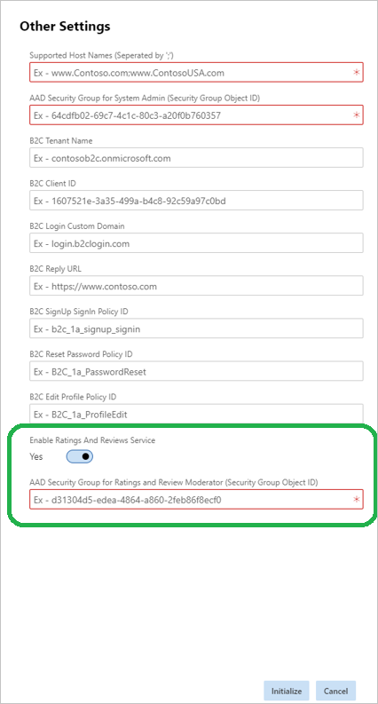

Abonnieren zum Verwenden von Bewertungen und Prüfungen
Important
Dynamics 365 Retail ist jetzt Dynamics 365 Commerce und bietet umfassende Handelsfunktionen für alle Kanäle – von E-Commerce über Shops bis hin zu Callcentern. Weitere Informationen zu diesen Änderungen finden Sie unter Microsoft Dynamics 365 Commerce.
In diesem Thema wird erläutert, wie Sie sich für die Verwendung von Bewertungen und Prüfungen auf Ihrer Microsoft Dynamics 365 Commerce-Site anmelden.
Übersicht
Die Bewertungs- und Prüfungslösung ist eine Omnikanal-Lösung, die Sie in Dynamics 365 Commerce zur Verfügung stellen können, indem Sie Microsoft Dynamics Lifecycle Services (LCS) verwenden. LCS ist ein Verwaltungsportal, über das Einzelhändler ihre Umgebungen von der Bereitstellung bis zur Außerbetriebnahme verwalten.
Wenn Sie die Bewertungs- und Überprüfungslösung auf Ihrer Commerce-Website verwenden möchten, müssen Sie sich für Bewertungen und Überprüfungen während der Bereitstellung Ihrer E-Commerce-Website auf anmelden Dynamics 365 Commerce.
Abonnieren zum Verwenden von Bewertungen und Prüfungen
Führen Sie die folgenden Schritte aus, um die Verwendung von Bewertungen und Prüfungen auf Ihrer Site zu aktivieren.
Befolgen Sie die Schritte in Eine neue E-Commerce-Webseite bereitstellen.
Navigieren Sie, während Sie sich noch im LCS befinden, zu Einrichtung der Retail-Bereitstellung > Andere Einstellungen.
Legen Sie die Option Bewertungs- und Prüfungsdienst aktivieren auf Ja fest.
Geben Sie im Feld AAD-Sicherheitsgruppe für Bewertungs- und Prüfungsmoderator die ID der Microsoft Azure Active Directory-Sicherheitsgruppe (Azure AD) ein, die Bewertungs- und Prüfungsmoderatoren enthält.

Schließen Sie den E-Commerce-Initialisierungsprozess ab.
Note
Wenn Sie ein bestehender Dynamics 365 Commerce Kunde sind, der bereits eine E-Commerce-Website bereitgestellt hat, ohne sich für Bewertungen und Beurteilungen entschieden zu haben, und der jetzt Bewertungen und Beurteilungen vom Dynamics 365 CommercePaket verwenden möchte, sendet bitte eine Serviceanfrage. Informationen zum Senden einer Serviceanforderung finden Sie unter Prozess zur Übermittlung von Serviceanfragen (This is an external link).
Zusätzliche Ressourcen
Überblick über Bewertungen und Prüfungen
Verwalten von Bewertungen und Prüfungen
Konfigurieren von Bewertungen und Prüfungen
Synchronisieren von Produktbewertungen in Dynamics 365 Commerce